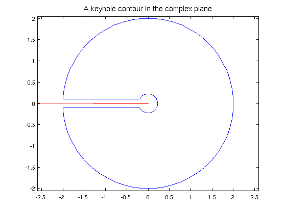

A keyhole contour integral
Nick Trefethen and Nick Hale, October 2010
(Chebfun example complex/KeyholeContour.m)
Chebfun is able to represent complex functions of a real variable, which lends itself very well to computing paths and path integrals in the complex plane. In this brief example we demonstrate this by integrating the function
f = @(x) log(x).*tanh(x);
around a 'keyhole' contour which avoids the branch cut on the negative real axis.
We'll first define our keyhole. Let r, R, and e be the inner and outer radii and the width of the key respectively:
r = 0.2; R = 2; e = 0.1;
Construct the contour:
s = chebfun('s',[0 1]); % Dummy variable c = [-R+e*1i -r+e*1i -r-e*1i -R-e*1i]; z = [ c(1) + s*(c(2)-c(1)) % Top of the keyhole c(2)*c(3).^s ./ c(2).^s % Inner circle c(3) + s*(c(4)-c(3)) % Bottom of the keyhole c(4)*c(1).^s ./ c(4).^s]; % Outer circle
Plot the contour and the branch cut of the function f:
LW = 'LineWidth'; lw = 1.2; FS = 'FontSize'; fs = 14; plot(z,LW,lw), axis equal, title('A keyhole contour in the complex plane',FS,fs); hold on, plot([-2.6 0],[0 0],'-r',LW,lw); hold off, xlim([-2.6 2.6])
Now to integrate around the contour, one parametrises by a real variable, say t (which here is done implicitly by the Chebfun representation), and integrates the function f(z(t))*z'(t) with respect to t.
In Chebfun, this is easy:
I = sum(f(z).*diff(z))
I = 0.000000000000007 + 5.674755637702245i
For the function we chose above, one can compute this integral exactly.
Iexact = 4i*pi*log(pi/2)
Iexact =
0 + 5.674755637702224i
How does this compare with our computation?
error = abs(I - Iexact)
error =
2.246933419889089e-14